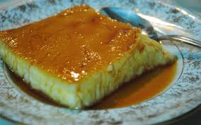

...KARAMELLİ İRMİK TATLISI...
Yapımı çok kolay ve pratik olan bu tarif özel günlerde, bayramlarda,
kalabalık konuklarınız olduğunda sizi kurtaracak bir tatlı.
Tarif:
Sultan ÇİĞ
Kaç Kişilik: 6 Kişilik
Hazırlanma Süresi:15 Dakika
Pişirme Süresi:15 Dakika

Karamelli İrmik Tatlısı için Malzemeler
- 2 Yumurta
- 3 Yemek kaşığı süt
- 3 Yemek kaşığı sıvı yağ
- 3 Yemek kaşığı toz şeker
- 3 Yemek kaşığı un
- 3 Yemek kaşığı irmik
- 1 Paket vanilya ve 1 paket kabartma tozu
Karamelli İrmik Tatlısı Nasıl Yapılır?
-
Yukarıda belirttiğimiz malzemeleri geniş bir kaba koyup pürüz
kalmayana kadar çırpıyoruz.
- Önceden yağladığımız küçük boy fırın tepsisine döküyoruz.
- 180 C°'de 15 dakika kontrol ederek pişiriyoruz.
-
Tatlımız pişerken tatlının üstüne dökeceğemiz şekerli sütü; 2 Bardak
süt ve 1 bardak toz şekeri karıştırarak(ısıtmadan) hazırlıyoruz
-
Pişirme işlemimiz bittikten 5 dakika sonra şekerli sütümüzü üstüne
gezdirerek ekliyoruz. Şekerli sütü hemen çektiğini göreceksiniz!
- Tatlımız soğurken Karamelini hazırlamaya başlayabiliriz.
Karamelin hazırlanışı
Bir tatlı kaşığı tereyağını uygun bir tavaya alıyoruz. iki yemek kaşığı
şekeri sütrkli karıştırarak yağda kavuruyoruz. Kahverengi rengini alınca
ocaktan alıyoruz. Bekletmeden yarım bardak sütün için bir tatlı kaşığı
nişastayı karıştırıp tavaya yavaş yavaş döküyoruz. Tavayı tekrar ocağa
alıp şeker eriyene kadar sürekli karıştırıyoruz. Kaynamaya başladığında
ocaktan alıyoruz.
Karameli tatlımızın üstüne eşit bir şekilde sürüyoruz. İsteğe bağlı
üstüne ceviz, fındık, fıstık atabilirsiniz...
Afiyet Olsun!